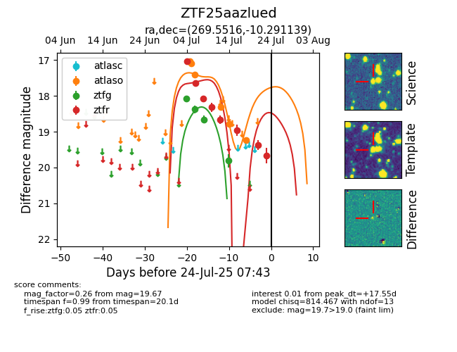

Target ZTF25aazlued at 2025-07-24 07:43, see:
FINK: fink-portal.org/ZTF25aazlued
Lasair: lasair-ztf.lsst.ac.uk/objects/ZTF25aazlued
ALeRCE: alerce.online/object/ZTF25aazlued
alt names
ZTF25aazlued (ztf,fink)
coordinates:
equatorial (ra, dec) = (269.5516,-10.29114)
galactic (l, b) = (17.6137,+6.89804)
photometry
last atlaso=19.24, ztfg=19.81, ztfr=19.67
6 atlaso, 4 ztfg, 8 ztfr detections
